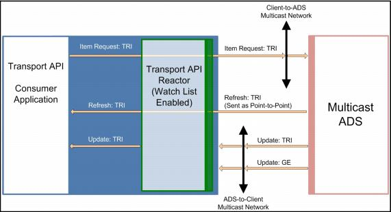

ADS Multicast Consumption The watchlist can request and consume data from an ADS configured to provide data over a multicast network. When multicasting data, the ADS provides data through two paths: a broadcast network that sends messages intended for multiple consumers (such as item updates), and a unicast channel, for messages directed at a particular consumer (such as refreshes to satisfy an item request). The watchlist synchronizes messages delivered over these paths with each other and provides them to streams opened by the application.  Figure 3. Consuming Multicast Data with the Transport API Reactor The watchlist also provides additional recovery for lost data by: • Periodically re-requesting unanswered requests. • Detecting and recovering from gaps in sequenced data streams. • Identifying disconnects with the ADS and recovering streams provided by the ADS. For notes on configuring multicast, refer to Section 2.4.5.